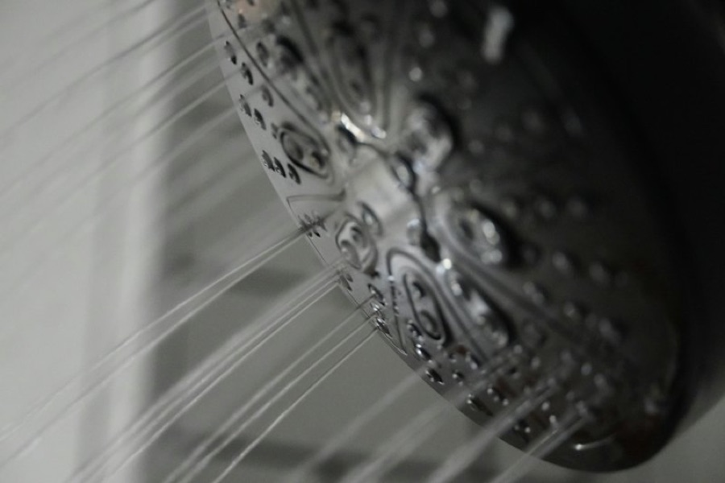

If you've moved to London from Glasgow, Cardiff, Manchester or somewhere in the West Country, you've probably already noticed. The kettle grows a crust within weeks. The shower screen never looks clean. Your shampoo doesn't lather like it used to, and your hair just feels different. And now it's November, the heating's on, and your skin's not thrilled either.
You're not imagining it. Large parts of Scotland, Wales, the North West and the South West tend to have soft water, while London and most of the South East have some of the hardest water in the country. Here's what that means day to day, and what you can do about it.
Why London's water is so different
It's all about geology. A lot of London's water comes from rivers and underground sources that have passed through chalk and limestone, picking up dissolved calcium and magnesium on the way. Soft-water areas often get their water from upland reservoirs fed by rain running off harder rock, like granite, that doesn't dissolve much into it.
Hard water is perfectly safe to drink. It's just more work to live with. If you want to know roughly how hard yours is, try our London postcode checker. It's an approximate guide rather than official data, so check with your water supplier for an exact figure. Our post on how to check if your area has hard water explains what the numbers mean.
What you'll notice
In the kitchen
- A furry kettle, and flakes floating in your tea.
- Spotty glasses and a white film inside the dishwasher.
- Crusty taps with chalky white rings round the base and spout.
- Tea that tastes a bit different, sometimes with a thin film on top. Some people swear by a particular brand for hard water. We'll stay out of that one.
In the bathroom
- Shower screens and tiles that go cloudy no matter how often you clean them.
- Shower heads that start spraying off at odd angles as the jets block.
- Soap and shampoo that need a bigger squeeze to lather, and a grey ring round the bath.
- Hair that feels heavier or duller, and skin that feels tight after a shower. Plenty of people notice this, especially in winter. It's a comfort thing rather than a health issue, but it's real enough.
In the laundry
Towels dry stiffer, colours can look a bit duller over time, and you'll find you need more detergent. That's because the minerals in hard water get in the way of detergent doing its job.
Quick wins that cost very little
These work whether you rent or own:
- Set up the dishwasher properly. Most dishwashers have a built-in softener. Check the hardness setting matches your area (the manual explains how) and keep the salt and rinse aid topped up. It makes a big difference to glasses.
- Descale little and often. Kettle, shower head and taps every few weeks is much easier than chipping off months of build-up. White vinegar or a proper descaler both work. Follow the manufacturer's advice for anything with a warranty.
- Squeegee the shower screen after use. It feels fussy, but it stops water drying on the glass and leaving scale behind.
- Try a jug filter for the kettle. Some are designed to reduce limescale, which can mean less scale in the kettle and a cleaner cuppa. Change the cartridges as the maker suggests.
- Use the right amount of detergent for hard water. The pack usually tells you.
If you're renting
A whole-house water softener is a plumbing job, so you'll need your landlord's permission. Some landlords are happy to have one fitted, as it helps protect their boiler and appliances, and our post on limescale and your boiler explains why that matters. Others will say no, and that's fair enough.
If a softener's off the table, the quick wins above go a long way. You'll also see filter shower heads sold for hard water. Results vary and they don't soften water the way a softener does, so keep your expectations modest.
If you're buying
If you've bought a place, you've got more options. A whole-house softener is the one thing that actually removes the hardness minerals, so it deals with the kettle, the shower, the laundry, the boiler and the cleaning all at once. You'd keep a separate unsoftened tap in the kitchen for drinking and cooking, which we fit with every softener.
It's not the only option. Scale reducers are cheaper and simpler, though they work differently and don't give you that soft-water feel. We've compared the two in water softener or scale reducer. And if your new home already has a softener, our guide to buying a house with a water softener explains what to check.
When you're ready to look at it properly, our water softener installation page explains how it works, from the free survey and water test to the fitting itself.
A word about skin
Lots of people who move from soft-water areas mention dry or itchy skin in their first London winter. Hard water may be part of it, but so are central heating, cold weather and new routines. A softener isn't a treatment for any skin condition. If you're worried, see a pharmacist or GP. Our post on soft water and eczema goes into what the research actually says.
Quick answers
Why is London's water so hard?
Much of London's water has passed through chalk and limestone, which adds dissolved calcium and magnesium. Many soft-water areas get their water from upland sources running off harder rock that doesn't add much mineral content.
Is London tap water safe to drink?
Yes. Hard water is safe to drink. The minerals cause limescale, which is a nuisance for your home rather than a health problem.
Can I get a water softener if I rent?
Only with your landlord's permission, as it involves plumbing work. If that's not possible, setting up your dishwasher correctly, regular descaling and a limescale-reducing jug filter for the kettle all help.
Want a hand with your water?
Book a free survey and water test. We'll tell you straight whether a softener's worth it for your home.
Get a free quote